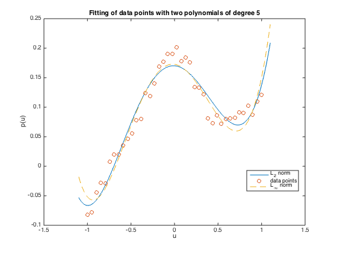

% Section 6.5.3 % Boyd & Vandenberghe "Convex Optimization" % Original by Lieven Vandenberghe % Adapted for CVX by Joelle Skaf - 10/03/05 % (a figure is generated) % % Given data u_1,...,u_m and v_1,...,v_m in R, the goal is to fit to the % data a polynomial of the form % p(u) = x_1 + x_2*u + ... + x_n*u^{n-1} % i.e. solve the problem: minimize ||Ax - v|| % where A is the Vandermonde matrix s.t. Aij = u_i^{j-1} % Two cases are considered: L2-norm and Linfty-norm % Input data n=6; m=40; randn('state',0); % generate 50 ponts ui, vi u = linspace(-1,1,m); v = 1./(5+40*u.^2) + 0.1*u.^3 + 0.01*randn(1,m); % LS fit polynomial x_1 + x_2*u + ... + x_n*u^(n-1) to (ui,vi) fprintf(1,'Computing optimal polynomial in the case of L2-norm...'); A = vander(u'); A = A(:,m-n+[1:n]); % last n columns of A x = A\(v'); % coefficients of the polynomial in the following % order: x = [x_n x_(n-1) ... x_2 x_1]' fprintf(1,'Done! \n'); % L-infty fit fprintf(1,'Computing optimal polynomial in the case of Linfty-norm...'); cvx_begin quiet variable x1(n) minimize (norm(A*x1 - v', inf)) cvx_end fprintf(1,'Done! \n'); % generates 1000 points in [-1,1] u2 = linspace(-1.1,1.1,1000); % evaluate the interpolating polynomial using Horner's method vpol = x(1)*ones(1,1000); vpoll1 = x1(1)*ones(1,1000); for i = 2:n vpol = vpol.*u2 + x(i); vpoll1 = vpoll1.*u2 + x1(i); end; figure % plot function and interpolating polynomial plot(u2, vpol,'-', u, v, 'o', u2, vpoll1,'--'); xlabel('u'); ylabel('p(u)'); title('Fitting of data points with two polynomials of degree 5'); legend('L_2 norm','data points','L_{\infty} norm', 'Location','Best'); % print -deps polapprox.eps
Computing optimal polynomial in the case of L2-norm...Done! Computing optimal polynomial in the case of Linfty-norm...Done!
